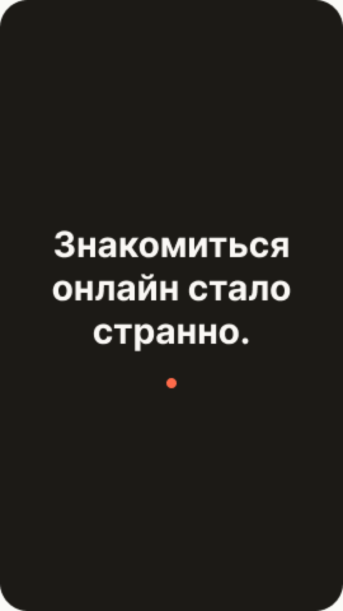
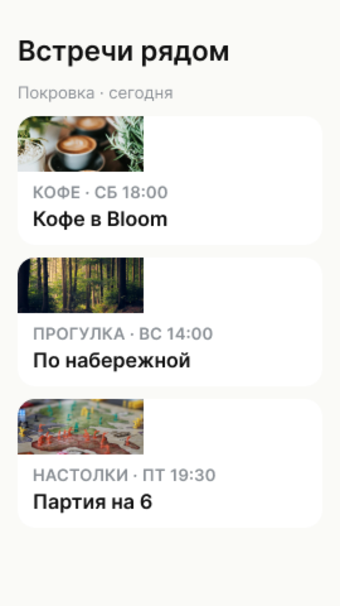
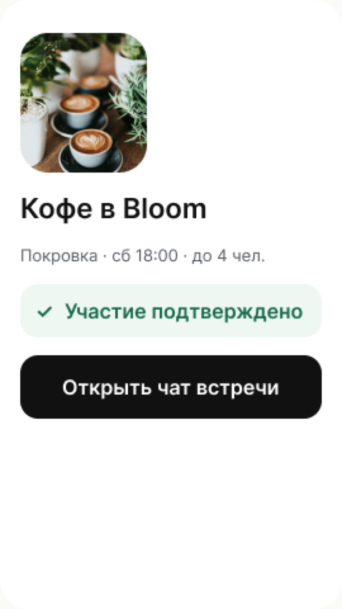
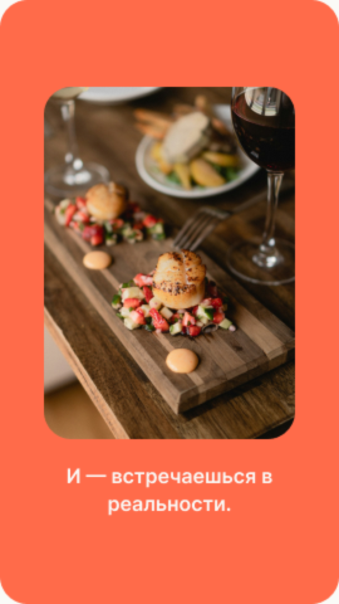
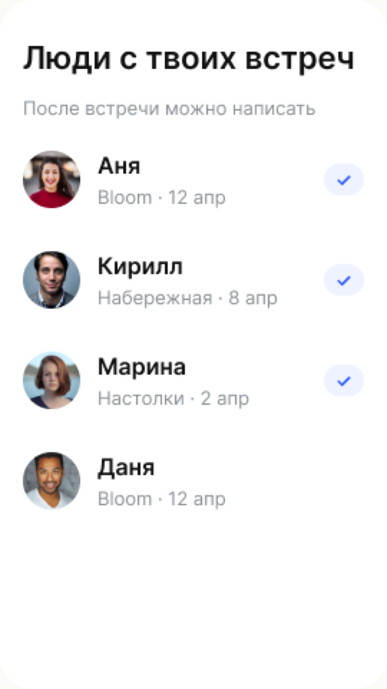
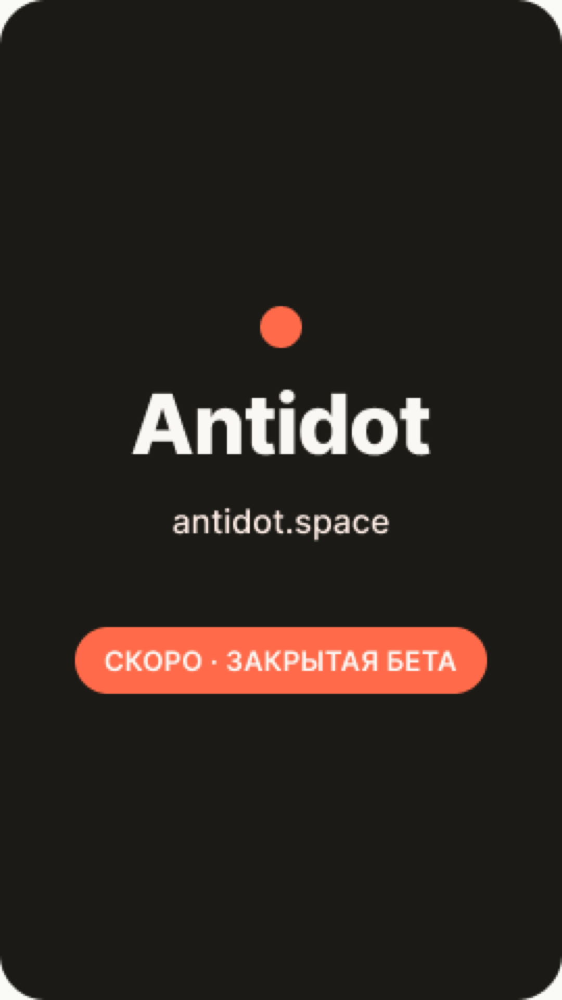

Ролик зациклен. Чтобы записать MP4:
1. Нажми «Hide HUD» ниже.
2. ⌃⌘5 → QuickTime Screen Recording → выдели прямоугольник телефона → Record.
3. Запиши минимум 25 сек (1 цикл + запас). Останови.
4. Импортируй в CapCut, обрежь до 23 сек, наложи voiceover + music.





